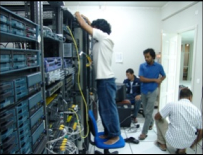
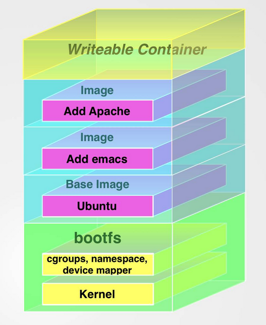
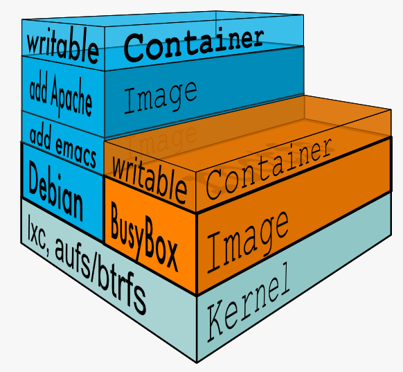
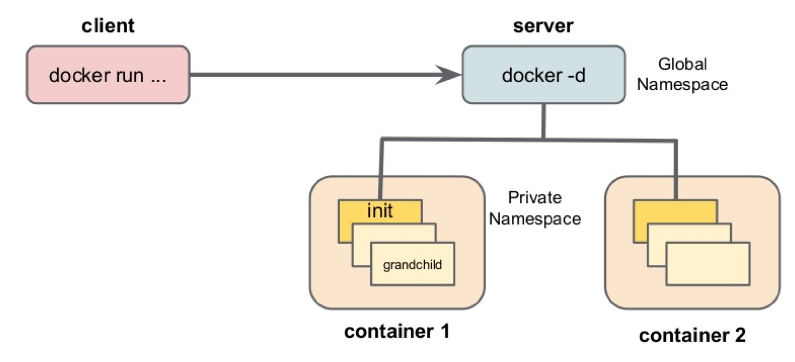

Intro to Docker

This is a fork of a presentation originally created by John Lewis (pointful)
The contents of the the slides have been liberally borrowed
from Docker Slideshare materials.
Thanks to everyone at Docker, Inc!
The contents of the the slides have been liberally borrowed
from Docker Slideshare materials.
Thanks to everyone at Docker, Inc!
Agenda
Introduction
The Challenge
Docker Containers
Docker Images
Demo
Closing Thoughts
Docker Inc.
About Docker Inc.
- Company behind the Docker ecosystem
- Launched in March 2013
- HQ in San Francisco
- Originally dotCloud
- Released Docker 1.0 in June of 2014
- 20,000+ GitHub stars
- 200M+ Docker Engine downloads
- 100,000+ "Dockerized" applications in the Docker Hub Registry
- 170+ Docker Meetup Groups in 50 countries
- 900+ community contributors
- 75,000 third-party projects on GitHub using Docker
By the numbers.
What is Docker?
An open platform for developers and sysadmins to
build, ship, and run distributed applications
Docker Engine
- A portable, lightweight application
runtime and packaging tool. - Written in Golang.
Docker Hub
- A cloud service for sharing applications and automating workflows.

Why do we care?
Devs
- Clean portable runtime environment
- No worries about missing dependencies, packages, etc.
- A VM without the overhead of a VM.
- Instant replay and reset of image snapshots
 Ops
- Make entire lifecycle more efficient, consistent, and repeatable
- Eliminate inconsistencies between environments
- Because the containers are so lightweight they address significant performance, cost, deployment, and portability issues normally associated with VMs
Agenda
Introduction
The Challenge
Docker Containers
Docker Images
Demo
Closing Thoughts

The Challenge

The Matrix from Hell

Cargo Transport Pre-1960

Also a Matrix from Hell

Solution: Intermodal Shipping Container

Docker is a Container System for Code

Docker Eliminates the Matrix from Hell

Agenda
Introduction
The Challenge
Docker Containers
Docker Images
Demo
Closing Thoughts
Containers
How you run your applicationImages
How you store your applicationVirtual Machines vs Containers

Containers and Virtual Machines Are Complementary
- Virtual Machines are best used to allocate chunks of hardware resources
- Containers operate at the process level, which makes them very lightweight
and perfect as a unit of software delivery
Under the Hood

The Tech That Makes A Container
- namespaces - provide isolation
- cgroups- provide resource control
- copy-on-write file system - layered file systems that are fast and require limited disk usage
- libcontainer - a native Linux container format that Docker
Linux Kernel Namespaces
- Mount: provides file system isolation. Each container is its own root filesystem
- Process: each container runs in its own process environment
- Network: separate virtual interfaces and IP addressing between containers
- UTS: allows a container to have it's own hostname independently from the host system along with other containers
- IPC: used for isolating interprocess communication, things like SysV message queues
- User: allows for separate users in the container and run as root in the container but not on the host's file system
Control Groups (cgroups)
- Resource isolation and grouping
- Enables you to place limits and constraints on a container's resources
- The following resources are allocated to each Docker container using cgroups:
- Memory
- CPU
- Block I/O
- Devices
Copy-On-Write
libcontainer
Libcontainer provides a native Go implementation for creating containers with namespaces, cgroups, capabilities, and filesystem access controls. It allows you to manage the lifecycle of the container performing additional operations after the container is created.Agenda
Introduction
The Challenge
Docker Containers
Docker Images
Demo
Closing Thoughts
Containers
How you run your applicationImages
How you store your applicationDocker Image
- You launch containers from images
- An image is made up of layered images (file systems)
- UnionFS creates a union mount which overlays the file systems
- When you remove a file it is marked as deleted and not actually deleted. The files will still exist in the layer where they were last present
- When launched, the image appears to be a flat filesystem
- Every line in a Dockerfile creates a new image

Size Matters
Here is some data on commonly used images:
scratch- this is the ultimate base image and it has 0 files and 0 sizebusybox- a minimal Unix weighing in at 2.5 MB and around 10000 filesdebian:jessie- the latest Debian is 122 MB and around 18000 filesubuntu:14.04- Ubuntu is 197 MB and has around 23000 files
Dockerfile
FROM debian:wheezy
MAINTAINER NGINX Docker Maintainers "docker-maint@nginx.com"
RUN apt-key adv --keyserver pgp.mit.edu --recv-keys 573BFD6B3D8FBC641079A6ABABF5BD827BD9BF62
RUN echo "deb http://nginx.org/packages/mainline/debian/ wheezy nginx" >> /etc/apt/sources.list
ENV NGINX_VERSION 1.7.11-1~wheezy
RUN apt-get update && \
apt-get install -y ca-certificates nginx=${NGINX_VERSION} && \
rm -rf /var/lib/apt/lists/*
# forward request and error logs to docker log collector
RUN ln -sf /dev/stdout /var/log/nginx/access.log
RUN ln -sf /dev/stderr /var/log/nginx/error.log
COPY www-content /var/www/
VOLUME ["/var/cache/nginx"]
EXPOSE 80 443
CMD ["nginx", "-g", "daemon off;"]
Docker Client-Server
The Flow of a Docker System

Let's review the components
- Dockerfile - instructions to create an image
- Registry - place to host those images
- Docker Client - users send build and run requests to the Docker daemon
- Docker Daemon - listens for the client and talks to libcontainer
- libcontainer - talks to the host's kernel and sets up namespaces and cgroups
Demo Time

Sweet Demo

Agenda
Introduction
The Challenge
Docker Containers
Docker Images
Demo
Closing Thoughts
Pets vs Cattle

Immutable Infrastructure
- Servers are deployed once and not changed
- If they are changed for some reason, they are marked for garbage collection
- Software is never upgraded on an existing server
- Instead the server is replaced with a new functionally equivalent server
Microservices
- An ecosystem
- An approach to developing a single application as a suite of small services
- Each run in its own process and communicate with lightweight mechanisms, often an HTTP resource API
- These services are built around business capabilities and independently deployable by fully automated deployment machinery
- There is a bare minimum of centralized management of these services, which may be written in different programming languages and use different data storage technologies.
Agility and Precision.
Want to learn more?
jonbrouse.github.io/docker-introResources
Get Social
- Github: docker
- IRC: freenode #docker
- Google Group: docker-user
- Google Group: docker-dev
- Twitter: @docker
- Meetups: Docker Meetups